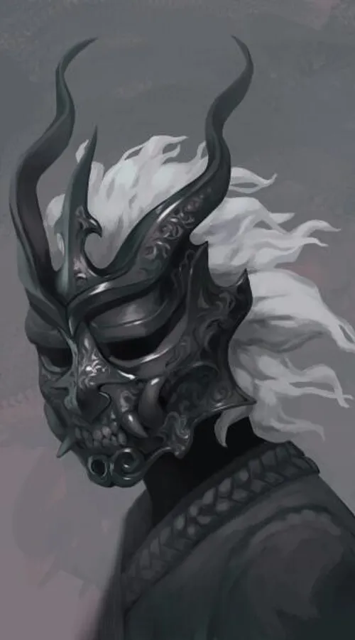

Aqui você verá coisas importantes como :
-
Personagens principais;
-
Sistema de poder;
-
História;
-
Curiosidades.

Sinopse
Crescendo na pobreza, Sunny nunca esperou nada de bom da vida. No entanto, nem mesmo ele antecipou ser escolhido pelo Feitiço do Pesadelo e se tornar um dos Despertos – um grupo de elite de pessoas dotadas de poderes sobrenaturais. Transportado para um mundo mágico arruinado, ele se viu enfrentando terríveis monstros – e outros Despertos – em uma batalha mortal pela sobrevivência O pior de tudo, o poder divino que ele recebeu acabou tendo um pequeno, mas potencialmente fatal efeito colateral…